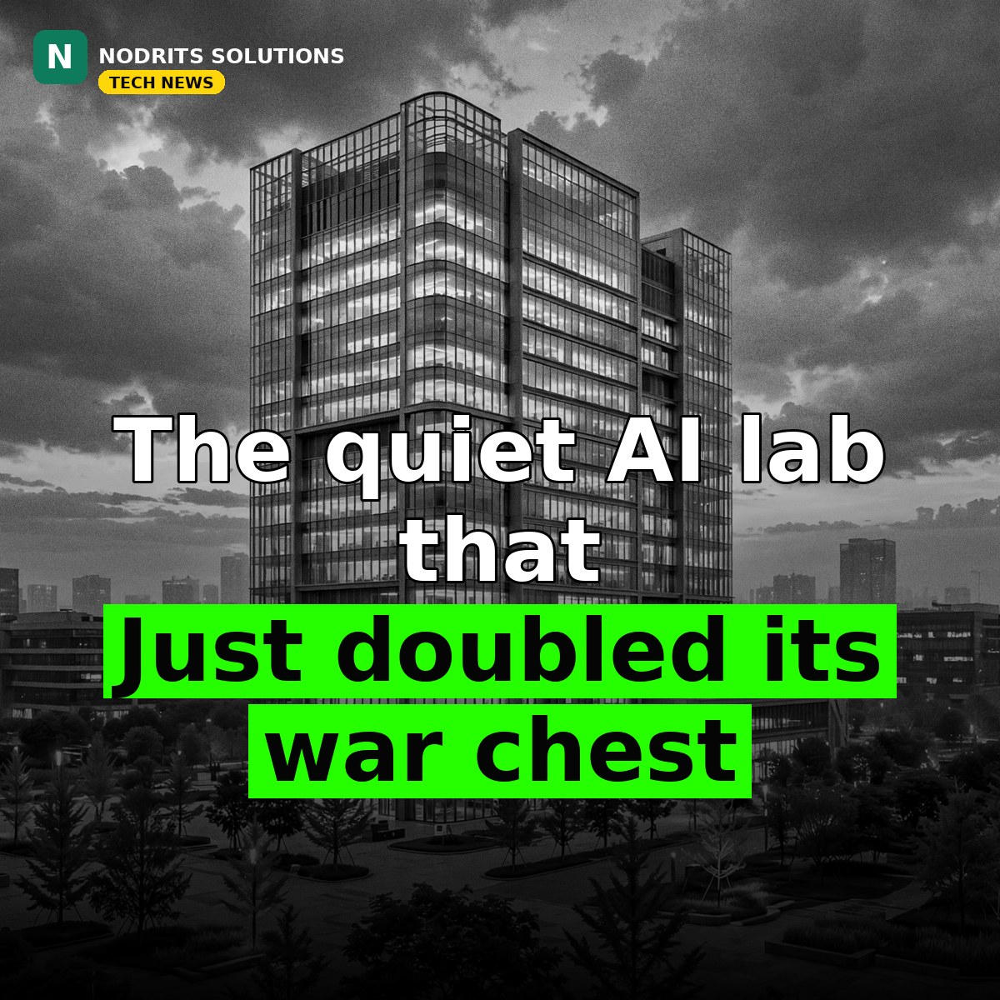

DeepSeek Closes a $15.8 Billion Round: The Quiet AI Lab Just Doubled Its War Chest

The quiet AI lab that shocked the world just doubled its war chest. Details of DeepSeek's second external funding round emerged on October 30, 2026: 105.5 billion yuan — about $15.8 billion — from nearly 30 investors, valuing the Hangzhou company at about 615.5 billion yuan, roughly $86 billion, after the money.
What happened
The Wall Street Journal first reported on October 22 that DeepSeek had raised about $15 billion in its second private financing, nearly doubling its original target on strong investor demand. The fuller picture, reported October 30 from The Information and Chinese financial filings, puts the round at 105.5 billion yuan (about $15.8 billion) — more than double the 50 billion yuan target the round opened with in July — with nearly 30 investors participating, up from a narrower group in the June round. Tencent Holdings and battery maker CATL remain the two largest private backers: Tencent invested 10 billion yuan in each of the two rounds, while CATL and its chairman Zeng Yuqun put in 5 billion yuan in the first round and 10 billion yuan in the second. State-backed participation rose sharply: the China National Artificial Intelligence Industry Investment Fund contributed 1 billion yuan, and state-owned investors accounted for about 27% of the second round, compared with roughly 2% in the first. The pre-money valuation, per earlier reporting, sat near 500 billion yuan (about $74 billion); the new money lifts it to about 615.5 billion yuan post-money. DeepSeek has hired state-owned investment bank CITIC Securities to advise on a potential listing on Shanghai's STAR Market, aimed for early 2027.
Why it matters
Two numbers explain why investors piled in. Founder Liang Wenfeng told investors in September that DeepSeek's annualized revenue run rate had reached $1 billion, more than double the $400–500 million reported in July. And the round's timing matters: it lands months after the US Department of Homeland Security ordered federal civilian agencies in late July to remove DeepSeek products and third-party tools built on its models from government IT systems. The bet, in other words, is that open-weight economics — strong models at a fraction of frontier training and inference cost — can scale into a business even as Western governments restrict it. The state-backed share of the round is the other story: at 27%, this is no longer just venture money. It is industrial policy expressed as a cap table, and it raises the question of how independent a lab can stay when its biggest backers are also its home government's instruments.
What it means for you
Ignore valuation headlines and test what matters: cost per completed task. If you use AI in your business, benchmark an open-weight model against your current provider on one real workflow this week — same task, same quality bar, measured cost. Keep more than one supplier in your stack so no single lab, policy change or price hike can strand you. And watch where the compute money lands: a lab that can afford its own chips and infrastructure is a lab that can keep its prices low for a long time.
The Nodrits take
DeepSeek is no longer a scrappy underdog story — it is a state-scale bet on open AI. That is either the best news open source ever got, or the moment open AI stopped being independent. Is DeepSeek's rise good for open AI, or does state-scale backing change the game? Tell us in the comments on today's post.
Need a website, SaaS product or AI workflow built right?
Nodrits Solutions designs, develops and automates for businesses in Pakistan, the USA, UK, UAE and Saudi Arabia.
Talk to Nodrits →Sources: The Wall Street Journal (October 22, 2026) via PYMNTS and Morningstar; The Information's round details (October 30, 2026) via PANews. Valuation conversions are approximate; revenue and investor figures are as reported, not company-confirmed.. Published October 31, 2026.